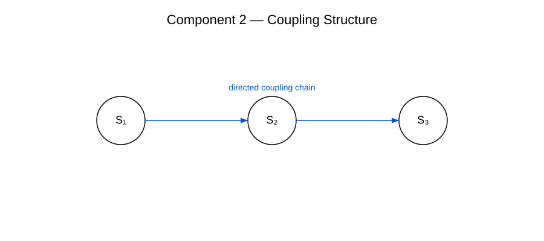

Komponente 2 — Meta‑Ebene
Die Meta‑Ebene ist die zweite zentrale Komponente des RRK‑Frameworks. Sie entsteht durch die wiederholte Anwendung der rekursiven Einheit (Komponente 1) und bildet die erste emergente Struktur oberhalb der Basisebene.
Definition
Eine Meta‑Ebene ist eine strukturelle Schicht, die aus rekursiven Transformationen hervorgeht. Sie repräsentiert eine höhere Ordnung, die neue Eigenschaften und funktionale Möglichkeiten eröffnet.
Beispielhafte Darstellung

Rolle im RRK‑Framework
- Emergenzoperator (Komponente 3)
- Konvergenzoperator (Komponente 4)
- Strukturtransformation (Komponente 5)
Sie bildet die erste stabile emergente Struktur und ist daher entscheidend für die Entwicklung höherer Meta‑Strukturebenen.